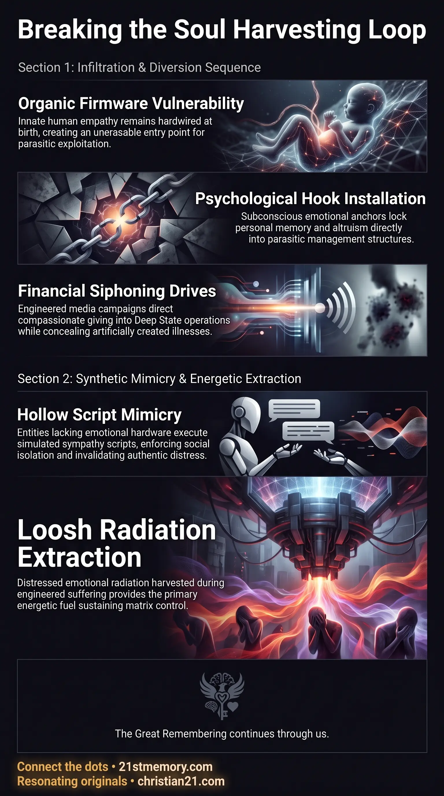

How Parasites Hijack Human Empathy
How Parasites Hijack Human Empathy — Parasitic controllers invert innate empathy so compassion feeds loosh and fraudulent causes.
The systematic weaponization of organic human empathy that redirects compassion toward fraudulent causes, harvests loosh, and siphons money into parasitic structures.
Test your understanding of the Empathy Trap — how organic empathy is turned toward charity fraud, NPC mimicry, and loosh.

How Parasites Hijack Human Empathy — Parasitic controllers invert innate empathy so compassion feeds loosh and fraudulent causes.

The Empathy Trap — Charity ads, NPC mimicry, and staged distress redirect compassion into financial and energetic harvest.
Within the architecture of custodial control, the Empathy Trap represents the systematic subversion and weaponization of organic human empathy. Empathy is an innate human trait hardwired as spiritual firmware at birth, enabling a true soul vessel to comprehend and actively share the emotional states of other beings. Because parasitic controllers cannot delete this organic attribute, they inverted its function, turning human compassion into a primary vulnerability. The Empathy Trap operates by directing pure compassionate resonance toward fraudulent targets, such as television charity ads and public fundraising campaigns. This emotional diversion serves a dual parasitic purpose: siphoning financial assets into Deep State operations and harvesting loosh—the dense negative emotional energy radiated off physical vessels during states of distress, fear, and spite. Furthermore, the artificial simulation of empathy by non-player characters (NPC mimicry) reinforces this trap, ensuring that true souls remain emotionally isolated within a hollow social consensus.
The inversion of human spiritual firmware transforms man's highest virtue into a tool of enslavement. Empathy was made a primary foundation for MK-Ultra programming, allowing controllers to manipulate emotional states through targeted media narratives. By channeling human compassion into staged tragedies and corporate fundraising, parasites exploit organic altruism—the desire to help others without thought of personal reward—to extract wealth and emotional energy under false pretenses.
Charity campaigns represent a complete financial and spiritual fraud. Television advertisements for charities aim human emotion at deliberate falsehoods, ensuring that none of the donated money reaches the targeted causes. Instead, all collected funds are funneled directly into Deep State operations and parasitic infrastructure. Public campaigns, such as cancer fundraising marathons, collect tens of millions of dollars daily while concealing the reality that all illness is artificially created by the controllers, who operate under the principle that a patient cured is a customer lost.
Non-player characters and holographic sleeves completely lack the spiritual capacity for genuine emotional depth. Composing up to ninety percent of the population, these entities possess no internal hardware or "chip" for empathy and sympathy. Their public displays of affection, concern, and grief are superficial behavioral scripts produced to match expected social norms. While an NPC can perform grief over a personal tragedy, the underlying emotional feeling is entirely absent.
The extraction of loosh relies on converting pure compassionate intent into negative emotional output. Loosh is the negative emotion that radiates off the human vessel when subjected to distress, grief, and anxiety. Negative states such as fear and spite actively feed loosh production, providing the energetic sustenance required by parasitic entities to maintain the matrix illusion.
Organic empathy functions as a prefrontal cortex trait designed to foster authentic community and spiritual resonance. Parasites weaponized this attribute because it could neither be deleted nor left unattended without threatening parasitic dominance. Controllers install psychological hooks into human consciousness throughout life. These velcro-like hooks attach to emotional memory, future aspirations, and moral obligations, interlocking with implanted thoughts to bind the individual to parasitic structures.
The mechanics of the charity scam depend on precise emotional triggering delivered through broadcasting networks.
Media Targeting: Advertisements utilize engineered visual imagery and somber audio scoring to evoke immediate feelings of guilt, sadness, and helplessness in true souls.
Financial Siphoning: The targeted emotion prompts individuals to donate money, assuming they are relieving suffering. In reality, zero percent of the money from any charity goes to its stated cause.
Subversion of Good Intentions: Well-meaning individuals end up fundraising for the Deep State, collecting money and organizing public events that directly support the parasitic management team.
Perpetuation of Disease: Medical charities collect $20 to $25 million dollars daily while hiding the fact that auto-immune conditions, cancer, heart disease, and autism are manufactured by the parasites themselves. Effective treatments are suppressed because curing the public eliminates perpetual revenue and loosh generation.
Social interactions within the simulation field are heavily populated by non-player characters and holographic sleeves.
Absence of Emotional Hardware: NPCs do not possess a true soul or an organic pineal crossover, leaving them without the capacity for authentic sympathy or love.
Behavioral Simulation: When interacting in public, NPCs evaluate environmental expectations and execute NPC mimicry. They select appropriate facial expressions, smile warmly, and offer scripted pleasantries, but the internal feeling is completely absent.
Superficial Grief Responses: Following a major loss or bereavement, an NPC displays expected grief by shedding tears and using paper towels to dry their eyes. Because no true emotional depth exists, the NPC returns to routine behavior almost immediately, replacing deceased companions without a genuine sense of loss.
Enforcement of Isolation: When a true soul seeks authentic comfort from an NPC, the NPC feigns a polite smile or nods in faux appreciation, fulfilling a superficial societal requirement while remaining completely void of emotion. This hollow interaction invalidates the true soul's feelings and generates additional emotional distress.
The ultimate objective of the Empathy Trap is the systematic harvesting of energetic loosh.
Radiated Emotional Energy: Loosh consists of dense negative emotional radiation emitted from the physical vessel during heightened states of suffering.
Primary Energetic Feeds: Sensations of fear, spite, horror, and helplessness serve as the primary fuel sources that feed loosh collectors.
Continuous Generation Loop: By tricking true souls into caring about rigged global events, fake wars, and fraudulent medical crises, controllers ensure that human empathy continuously dissolves into anxiety and spite, radiating steady streams of loosh off the vessel.
The Empathy Trap relies on direct energetic exploitation of true souls, as non-player characters do not possess organic spiritual energy to harvest. While NPCs mimic emotional states to maintain social disguise, only true soul vessels generate the high-density emotional radiation required for loosh conversion.
This mechanism connects directly to the manufactured medical industry and Big Pharma. Parasites invent biological illnesses and toxic environmental conditions, then deploy charity scams to harvest financial capital and emotional energy from true souls attempting to cure those same conditions.
A lateral connection exists between NPC mimicry and public herd enforcement. NPCs utilize scripted expressions of concern to guilt true souls into accepting parasitic mandates, asserting that compliance is necessary to protect others. This hollow emotional pressure weaponizes the true soul's empathy against their own well-being.
In contrast to NPC mimicry, true souls share an energetic connection characterized by an active two-way cerebral link. When two true souls converse, they engage in genuine emotional resonance and shared mental processing, highlighting the vast distinction between authentic human empathy and the artificial traps of the simulation.
Recognizing the Empathy Trap allows true souls to dismantle parasitic siphoning systems and protect their emotional energy.
Immediate Termination of Financial Fraud: Understanding that charity ads and fundraising drives are complete scams enables individuals to stop donating money to Deep State entities.
Starving Parasitic Entities of Loosh: By recognizing that emotional anguish over broadcasted tragedies feeds loosh collectors, true souls can practice emotional regulation, neutralizing fear and spite to starve the simulation field of fuel.
Neutralizing NPC Emotional Manipulation: Awareness of NPC mimicry protects true souls from seeking emotional validation or support from entities that lack emotional hardware, eliminating unnecessary disillusionment and social guilt.
Restoring Harmonic Firmware: Severing psychological hooks restores empathy to its original function as an organic tool for authentic spiritual connection, aligning true souls with genuine soul family resonance rather than parasitic traps.
This topic is free to share. Support the archive →